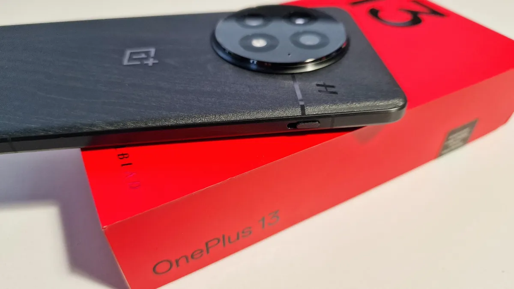

|
OnePlus is ditching the Alert Slider for an iPhone-style customizable button - and I’ll be sad to see it go

OnePlus will replace the iconic Alert Slider found on most of its premiere phones with an Apple-style customizable button, according to a new statement by the company’s CEO.
In a post to the OnePlus Community forum, OnePlus CEO Pete Lau confirmed that the Alert Slider would be replaced due to the limited functionality offered by the three-position slider.
This means the successors to the OnePlus 13 and OnePlus 13R will likely lack one of the brand's most iconic features.
|